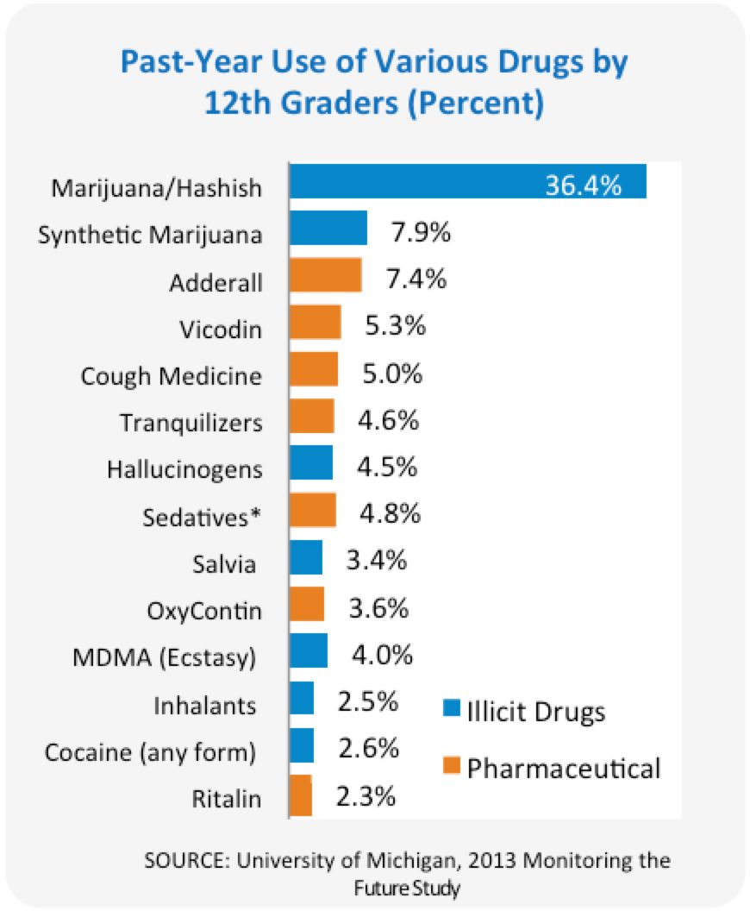
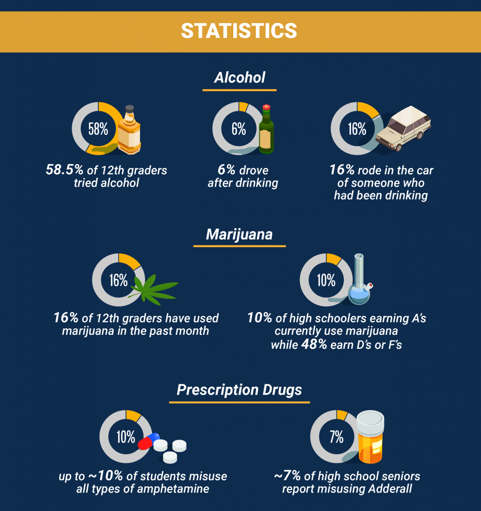

Number 3
Statistics

Though not all teens abuse drugs or alcohol, most teenagers know somebody who does. Drug prevalence and availability is high as well. The latest statistics show that nearly 20% of high school students have been offered, sold or given drugs, on school property, in the past year. Fortunately, the fact is that drug use among teenagers is declining: a recent study found that 4.3% of high schoolers had used drugs in the month before being surveyed, which is lower than previous years.
 Alcohol
In the United States, high school students abuse alcohol more than any illicit drug. Not surprisingly, it causes
the most harm, and underage alcohol use is responsible for 119,000 emergency department visits and 4,300 deaths
each year among people under the age of 21.
Statistics from surveys conducted the past two years show:
58.5% of 12th graders had tried alcohol
30% of high schoolers drank in the last month
13% binge drank (consuming four or more alcoholic beverages in a row)
16% rode in the car of someone who had been drinking
6% drove after drinking
Marijuana
In terms of illicit drugs, teenagers abuse marijuana the most. With the legalization of marijuana and cannabis
products in many states, marijuana is now easily accessible to many high school students. At the same time,
teenage perception of the dangers associated with marijuana use or the risk of marijuana addiction has
decreased. Marijuana use in teens has remained steady in recent years, though many teens are now vaping
marijuana in addition to smoking it.
Current and even past marijuana use is linked to significantly lower academic performance. The statistics on
teenage marijuana use show that middle and high school marijuana use is common:
10% of high schoolers earning As as grades currently use marijuana, as opposed to
48% of
those earning Ds or Fs
16% of 12th graders have used marijuana in the past month
1% of 6th graders have used marijuana in the past month
Prescription Drugs
Fortunately, the opioid epidemic seems to have avoided high schools. Unlike adults in the country, non-medical
use of prescription drugs, especially opiate painkillers, has decreased among teenagers in recent years. About
11% of high school seniors report misusing prescription medications in the past year. However, the number is
only 4% when it comes to the misuse of painkillers specifically.
Academic pressure and lack of sleep can cause teens to turn to drugs to boost their performance in school.
Stimulants, like the amphetamine drugs Adderall and methylphenidate (Ritalin) are often chosen by students
trying to cram for an exam or staying up late finishing homework. While these are often prescribed to treat
attention-deficit hyperactivity disorder (ADHD), they can cause harmful health effects if not used properly.
They can also become addictive.
Non-medical amphetamine use by teenagers is on the rise:
6.9% of high school seniors report misusing Adderall
7.9-9.8% of students misuse any type of amphetamine
Emergency department visits for ADHD medication use tripled between 2005 and 2010
Other Drugs Used by High Schoolers
Nearly a quarter of American high schoolers use at least one type of illicit drug. Many use more than one, or
combine them with alcohol or tobacco. Common drugs used by teenagers (besides marijuana) include:
- Amphetamines
- Cough Medicine
- Hallucinogens
- Ectasy (MDMA)
- LSD
- Cocaine
- Inhalants
- Salvia